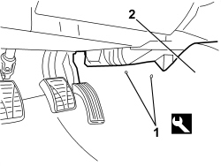
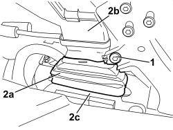

5010B70 SIDE CONNECTOR BRACKETS ONE, LH OR RH, BETWEEN AIR CONDITIONER CASING AND DUCT FOR R
- Path
- Procedures > 50 AUXILIARY UNITS > 5010 CLIMATE CONTROL - MISCELLANEOUS > 5010B CLIMATE CONTROL AIR PIPES AND DUCTS > 5010B70 SIDE CONNECTOR BRACKETS ONE, LH OR RH, BETWEEN AIR CONDITIONER CASING AND DUCT FOR R
- Kind
- repair procedure (removal / refitting; the operation number is the code)
- Applies to
- all engines; all production periods
- Interactive page
- https://sloeber94.github.io/elrnDB/alfa/159/en/#/939010890
Applies to: all engines; all production periods
 Removing
Removing
 Refitting
RefittingOp. 7040A65 CONSOLE SIDE CLOSING (ONE) - R.R.
1. Release the carpet retaining buttons using the special tool.
2. Move the top edge of the carpet slightly.
Tool | Description | Function | Validity |
|---|---|---|---|
1823015000 | Knife | Retainer removal |

Applies to: all engines; all production periods
1. Undo the bolt fixing the connecting duct.
2. Remove the connector (2a) releasing it from the ducts (2b) and (2c).

Applies to: all engines; all production periods
Refitting
Removing- Check that the connector is not damaged.
- Position the connector and attach it to the ducts.
- Tighten the retaining bolt.
- Position the top edge of the carpet and attach the retaining buttons.
Topics linked from this page (1)
Topics that link to this page (20)
- 1820B21 MASTER CYLINDER (PUMP) - R R FOR RIGHT HAND DRIVE VERSIONS
- 3330B02 PEDAL ASSEMBLY - R.R
- 3330B23 BRAKE PEDAL - R.R. FOR RIGHT HAND DRIVE VERSIONS
- 3330B27 CLUTCH PEDAL - R.R. FOR RIGHT HAND DRIVE VERSIONS
- 3330B42 PEDAL UNIT SUPPORT - R.R. FOR RIGHT HAND DRIVE VERSIONS
- 3330D18 BRAKE SERVO R R FOR RIGHT HAND DRRIVE VERSIONS
- 5010B46 CENTRAL AIR DUCT TO REAR SEATS - R.R.
- 5040C10 AIR CONDITIONING CASING - R.R
- 5040C50 AIR CONDITIONING HEATER RADIATOR - R.R.
- 5040C64 A/C EVAPORATOR - R+R
- 5040D80 AIR CONDITIONER SYSTEM WIRING BUNDLE - R R OR REPLACE
- 5040D86 AIR CONDITIONING RIGHT AIR MIXTURE FLAP CONTROL MOTOR - R.R
- 5040D94 AIR CONDITIONING LEFT UPPER AIR DISTRIBUTION FLAP MOTOR (DEFROST) - R.R
- 5040D96 AIR CONDITIONING RIGHT UPPER DISTRIBUTION FLAP MOTOR (DEFROST) - R.R
- 5505C31 BUILT-IN WIRING UNDER DASHBOARD - R.R.
- 5505C41 PASSENGER COMPARTMENT WIRING - R.R
- 5570T32 LEAD FROM COAXIAL TO RADIO - R R
- 5580C14 AIR BAG ECU - R+R
- 7040A89 REINFORCEMENT BRACKET BETWEEN DASHBOARD SUPPORTING CROSSMEMER AND BODYSHELL - R.R.
- 7210A74 R R FACIA SUPPORT BEAM